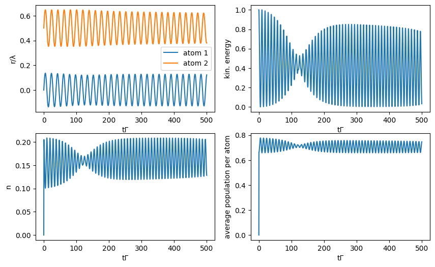
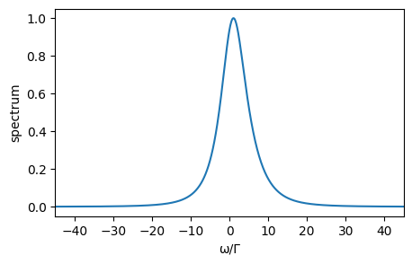

This notebook can be found on github
Simultaneous Lasing, Cooling and Trapping
In this example, we investigate simulatenous cooling and lasing of a superradiant laser. The superradiant laser operates in the bad cavity regime, i.e. the linewidth of the lasing transition $\Gamma$ is much smaller than the linewidth of the cavity $\kappa$. Usually, this is achieved by using a narrow atomic transitions, e.g. the clock transition of Strontium $(\Gamma \approx 1\mathrm{mHz})$. The advantage of a superradiant clock laser is its very narrow linewidth but also robustness against noise. In a simple model we describe the superradiant laser by $N$ incoherently pumped two-level atoms inside a cavity, and additionally we include motion along the cavity axis within a semicalssical treatment. The Hamiltonian of the system is $H = \hbar \Delta a^\dagger a + \hbar \sum_{i = 1}^{N} g(r_i) [ a \sigma_{i}^{+} + a^{\dagger} \sigma_{i}^{-}]$, where $\Delta = \omega_c - \omega_a$ is the detuing between the cavity resonance frequeny $ω_c$ and the atomic transition frequency $ω_a$. The position-dependent cavity-atom coupling of the $i$-th atoms is given by $g(r_i) = g \cos(kr_i)$, with $k$ the wavevector of the cavtiy photons. The cavity field is described by the bosonic creation and annihilation operators $a^{\dagger}$ and $a$, respectively, and the identical two-level atoms are characterized by the atomic excitation and deexcitation operators $\sigma^+$ and $\sigma^-$, respectively. The atomic decay, the photon losses through the cavity mirrors, and the incoherent pump are modeled by their corresponding Liouvillian operators, $\mathcal{L}_{\text{sp}}[\rho] = \frac{1}{2} \Gamma \sum_{i}(2 \sigma_i^- \rho \sigma_i^+ - \sigma_i^+ \sigma_i^- \rho - \rho \sigma_i^+ \sigma_i^-)$,
$\mathcal{L}_{\text{cav}}[\rho] = \frac{1}{2} \kappa (2 a \rho a^\dagger - a^\dagger a \rho - \rho a^\dagger a)$
and
$\mathcal{L}_{\text{pump}}[\rho] = \frac{1}{2} R \sum_{i} (2 \sigma^+_i \rho \sigma^-_i - \sigma^-_i \sigma^+_i \rho - \rho \sigma^-_i \sigma^+_i )$, with the incoherent pump rate $R$. To obtain the equations for the particles' semiclassical motion we use the Ehrenfest theorem leading to $\dot{r}_i = 2 \omega_{\text{r}} p_i$
and
$\dot{p}_i = 2 g \sin(k r_i) \langle a \sigma_{i}^{+} + a^{\dagger} \sigma_{i}^{-} \rangle$, where $p_i$ is the momentum of the $i$-th particle and $\omega_r = \hbar k^2/2m$ the recoil frequency. The time evolution of the system described above can be calculated by using the implemented semiclassical master equation. First we import the needed libraries and define the variables, Hilbertspaces and operators of the system.
using QuantumOptics
using PyPlot
using OrdinaryDiffEq
using Interpolationsn_p = 3 #photonen cutoff
N_a = 2 #number of atoms
#all variables and parameters are given in units of the following three
Γ = 1.0 #spontaneous emission rate
k = 1.0 #wavevector of the atom transition and the cavity field
ħ = 1.0 #Planck constant
ω_r = 0.1Γ #recoil frequency
Δ = 5.0Γ #cavity atom detuning Δ=ω_c-ω_a
g = 5.0Γ #coupling constant
κ = 20Γ #cavity loss rate
R = 8.0Γ #pump rate
λ = 2π/k #wavelength
#defining the basis of the Hilbertspace
b_c = FockBasis(n_p) #Fockbasis (cavity field)
b_a = SpinBasis(1//2) #2-level basis (atom)
b_all = tensor([b_a for i=1:N_a]...)⊗b_c #complete joint quantum basis
#defining operators
a = embed(b_all, N_a + 1, destroy(b_c)) #field annihilation operator
ad = dagger(a) #field creation operator
sm = [[embed(b_all, i, sigmam(b_a)) for i=1:N_a]...] #array of atom σ- operators
sp = dagger.(sm) #array of atom σ+ operators
#for faster computation we precalculate frequently used operator products
smad = [[sm[i]*ad for i=1:N_a]...]
spa = dagger.(smad)
spsm = sp.*sm
ada = ad*a
spsm_ar = [sp[i]*sm[j] for i=1:N_a, j=1:N_a]
spa_plus_smad = spa + smadNow we define the Hamiltonian and the Liouvillian, as well as the functions to update the quantum operators and the classical variables for the semiclassical time evolution.
H0 = Δ*ad*a #field and two-level atom Hamiltonian in rotaing frame
#Jump-Operators for Liouvillian
J = [[sm[i] for i=1:N_a]..., [sp[i] for i=1:N_a]..., a]
Jd = dagger.(J)
#rates of the dissipative processes
rates = [[Γ for i=1:N_a]..., [R for i=1:N_a]..., κ]
#function to update the Hammiltonian at every timestep
function f_q(t,ψ,u)
#update H
H_int = g*sum(cos.(u[1:N_a]*k).*spa_plus_smad)
H = H0 + H_int
#J and rates are always the same
return H, J, Jd, rates
end
#function to update classical variables (Ehrenfest-theorem)
function f_cl!(du,u,ψ,t)
#update position
for i = 1:N_a
du[i] = 2*ω_r*u[N_a + i]
end
#update momentum
for i = 1:N_a
du[N_a + i] = 1/k*2*g*sin(u[i]*k)*real(expect(spa[i],ψ))
end
endHere we define the initial state and calculate the time evolution of the semiclassical system and compute the time evolution.
#initial state
d_atoms = 0.5λ #initial atom spacing
#initial classical position and momentum of the atoms:
u = ComplexF64[[i for i=0:N_a-1]*d_atoms...,([i for i=0:N_a-1]*0.1.+1.5)ħ*k...]
#initial semi-classical state: all spins down and 0 photons + classical variables
ψ = semiclassical.State(tensor([spindown(b_a) for i=1:N_a]...,fockstate(b_c, 0)),u)
#semi-classical time evolution
timestep = 0.1
t_max = 500
T=[0:timestep:t_max;]/Γ
t,ρt = semiclassical.master_dynamic(T,ψ,f_q,f_cl!)We calculate some expectation values and plot the results.
#analyzing data
r = [[Float64[] for i=1:N_a]...] #postions of the particles at every timestep
p = [[Float64[] for i=1:N_a]...] #momenta of the particles
E_kin = [[Float64[] for i=1:N_a]...] #kinetic energies of the particles
n = Float64[] #number of photons in the cavity
popu = [[Float64[] for i=1:N_a]...] #excited state population of the particles
g2_0 = Float64[] #second order correlation function
for it=1:N_a
r[it] = [ρt[i].classical[it] for i=1:length(ρt)]
p[it] = [ρt[i].classical[N_a + it] for i=1:length(ρt)]
E_kin[it] = [(ρt[i].classical[N_a + it])^2 for i=1:length(ρt)]
popu[it] = [real(expect(spsm[it],ρt[i])) for i=1:length(ρt)]
end
n = [real(expect(ada,ρt[i])) for i=1:length(ρt)]
g2_0=[real(expect(ad*ad*a*a,ρt[i])/(expect(ada,ρt[i]))^2)
for i=[2,[2:1:length(ρt);]...]]
E_kin_all = sum(E_kin); #overall kinetic energyfigure(figsize=(10, 6))
#position
subplot(221)
for i=1:N_a
plot(t*Γ, r[i]/λ, label="atom $(i)")
end
xlabel("tΓ")
ylabel("r/λ")
legend()
#overall kinetic energy
subplot(222)
plot(t*Γ, E_kin_all/E_kin_all[1])
xlabel("tΓ")
ylabel("kin. energy")
#cavity photon number
subplot(223)
plot(t*Γ, n)
xlabel("tΓ")
ylabel("n")
#overall population per atom
subplot(224)
plot(t*Γ, sum(popu)/N_a)
xlabel("tΓ")
ylabel("average population per atom")
Finally, we calculate the spectrum of the output field. Obviously there is no steady state for our system since the particles always move. Therefore, we calculate the two-time correlation function just for the final state of the cooling process. Due to the semiclassical motion we need to precalculate the positions of the particles to obtain the spectrum, see arXiv:1906.01945 for details.
#calculate semiclassical spectrum
T_spec = [0:0.01:50;]
t1, ρt1 = semiclassical.master_dynamic(T_spec,ρt[end],f_q,f_cl!; alg=Tsit5())
r_spec = [[Float64[] for i=1:N_a]...] #postions of the particles at every timestep
#produce continous particle trajectories for further calculations
r_spline = []
for it=1:N_a
r_spec[it] = [real(ρt1.classical[it]) for ρt1=ρt1]
push!(r_spline, interpolate((t1,), r_spec[it], Gridded(Linear())))
end
function Ht(t,rho)
u = [r_spline[it](t) for it=1:N_a]
H_int = g*sum(cos.(u[1:N_a]*k).*spa_plus_smad)
H = H0 + H_int
return H, J, Jd, rates
end
aρ0 = a*ρt[end].quantum
τ, aρt = timeevolution.master_dynamic(T_spec,aρ0,Ht; alg=Tsit5())
corr = expect(ad, aρt)
ω, spec = timecorrelations.correlation2spectrum(τ, corr)
spec_0 = spec .- minimum(spec) #set spectrum minimum to 0
spec_0_norm = spec_0./maximum(spec_0)figure(figsize=(5, 3))
plot(ω/Γ, spec_0_norm)
xlabel("ω/Γ")
ylabel("spectrum")
xlim(xmin=-45, xmax=45)